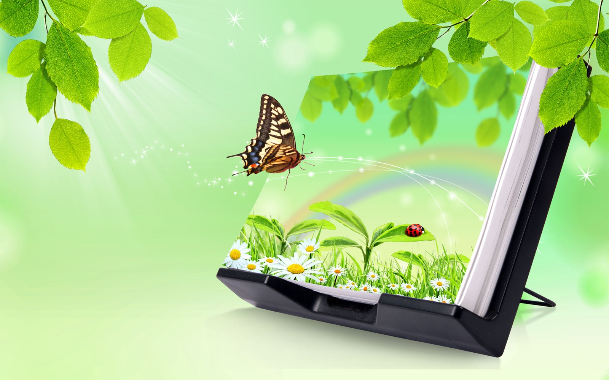
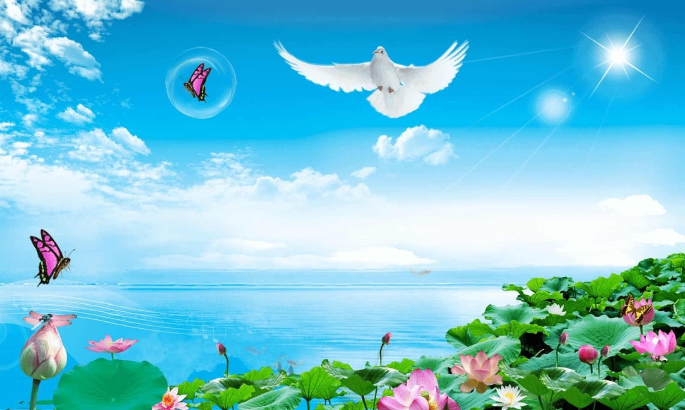
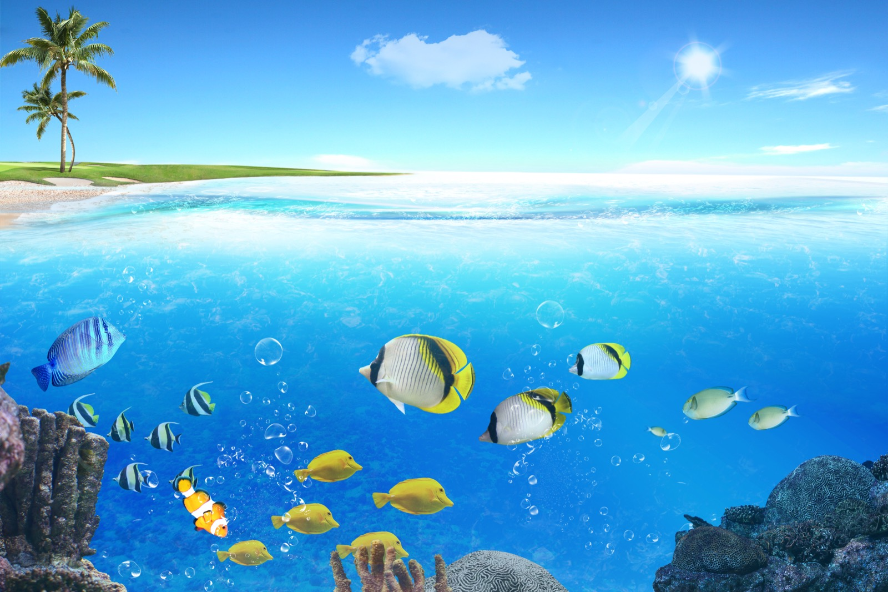
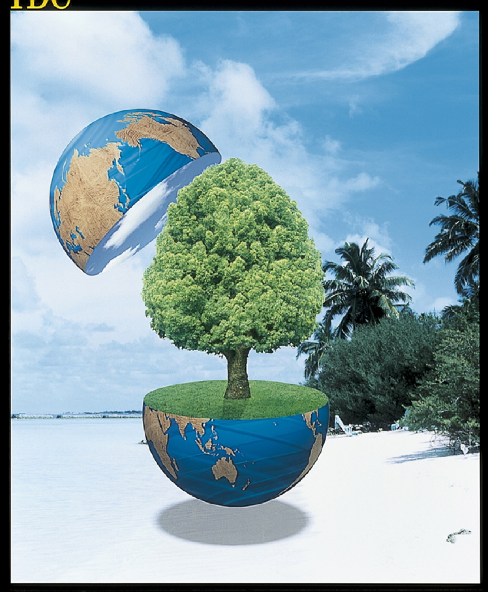
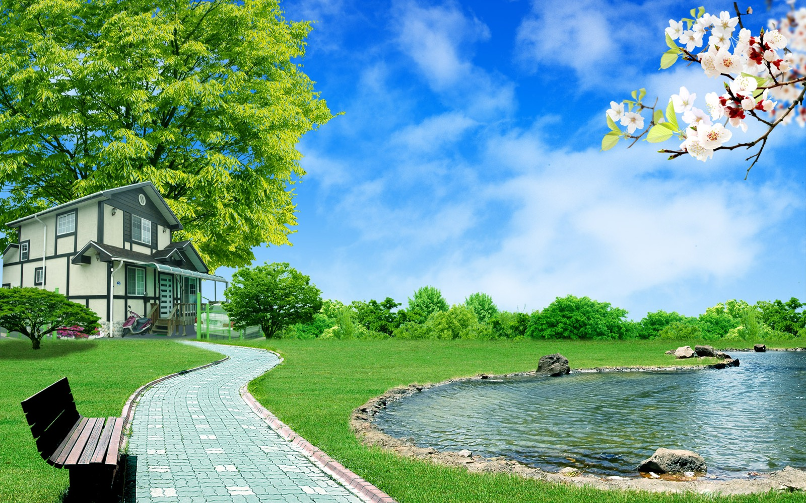
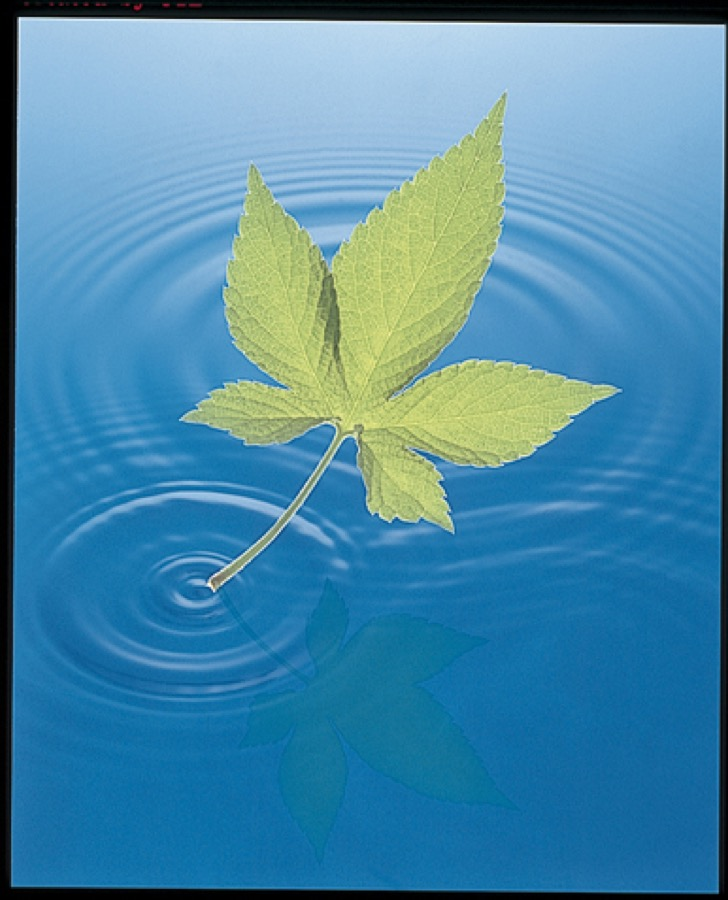
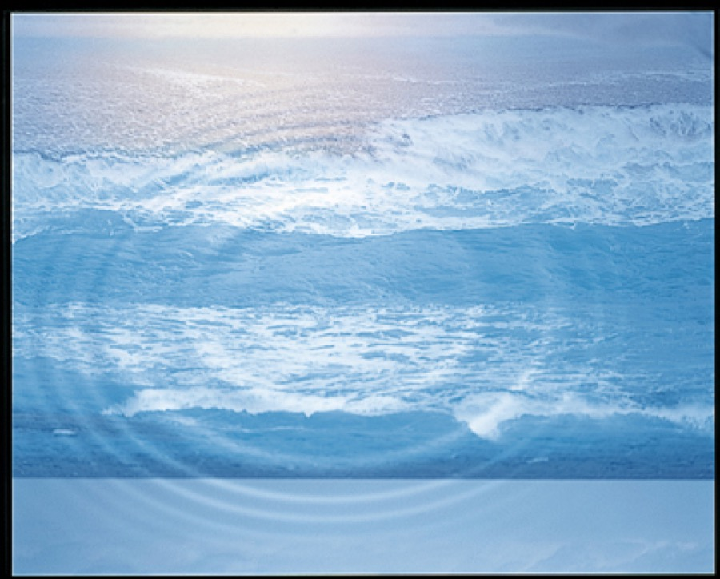

Aqua Media Player 11
Rips, burns, visualizes. The EQ glows like a jellyfish.
AquaSoft® presents
The operating system from a better tomorrow.
Glossy. Wet. Alive. Every window is glass, every icon is a droplet, and a goldfish lives in your taskbar. Upgrade your beige box into an aquarium.
218 MB · fits on one CD-R · dial-up friendly (allow 11 hours)
aqua_boy_2007
Online — ~*~drink more water~*~

NEW — LiveMeadow™ screensaver, included freeRips, burns, visualizes. The EQ glows like a jellyfish.
A real(ish) goldfish swims across your open windows. Feed it weekly.
Messages arrive inside actual bubbles. Nudges make ripples.
A widget so glossy you can see tomorrow's sky in it. Always sunny.
Syncs 214 devices. Phones, players, cameras — even the weird ones.
+142
more features
we forgot to list

Ocean Breeze — DJ Frutiger ft. Aero

AquaPhone Z
AquaPod nano
GameGill portable
SplashShot 7.1
Drop any gadget in the dock and AeroSync soaks your music, photos and contacts straight into the cloud. (The cloud is literal. Look up.)




+ 208 moreVersion 7.0.2600 · 218 MB · includes 30 wallpapers, 12 sounds, 1 fish
87% complete — 11 hours 4 minutes remaining (dial-up detected)
Mirrors: Mirror 1 (US) · Mirror 2 (DE) · MegaUpload (RIP)